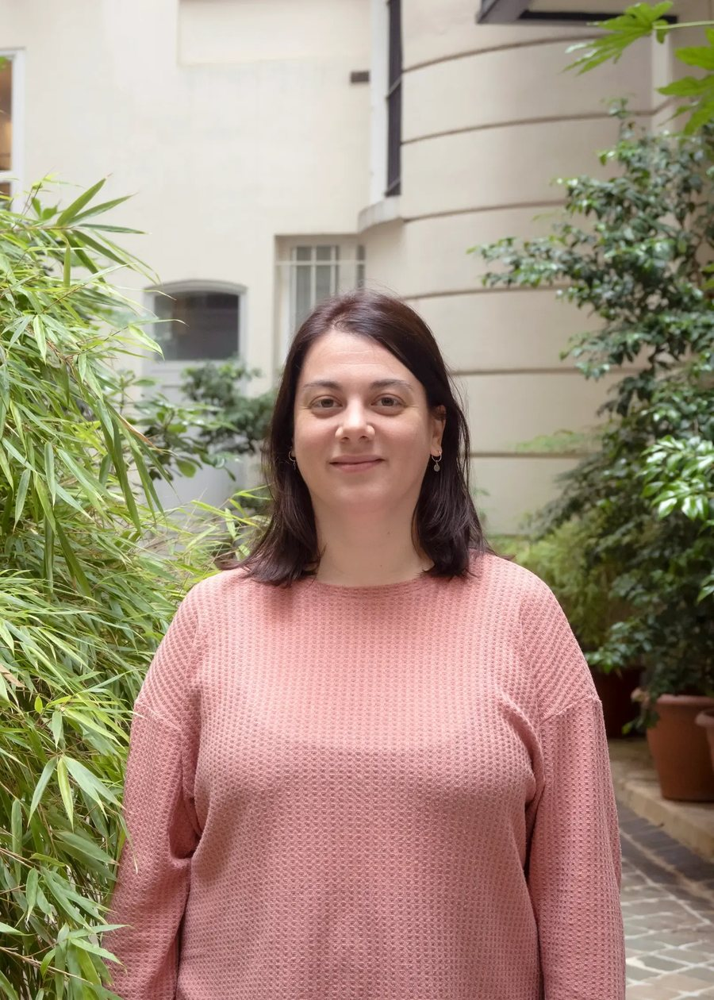
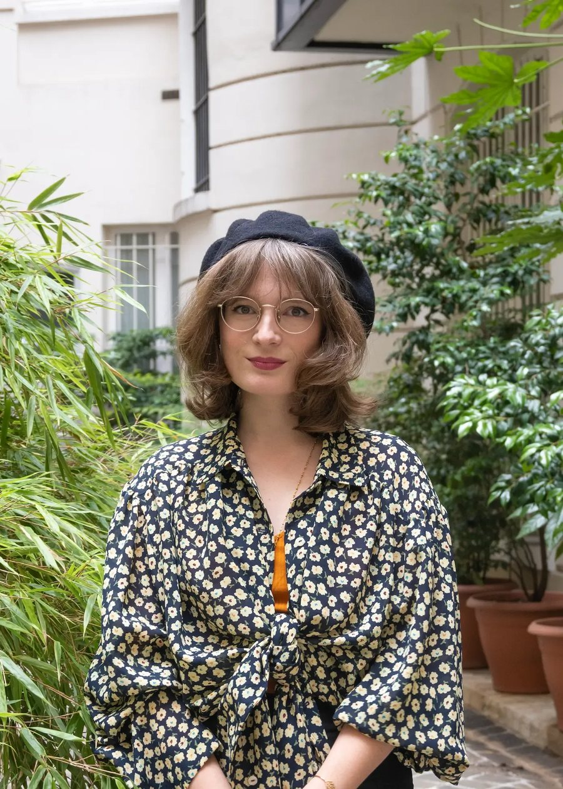
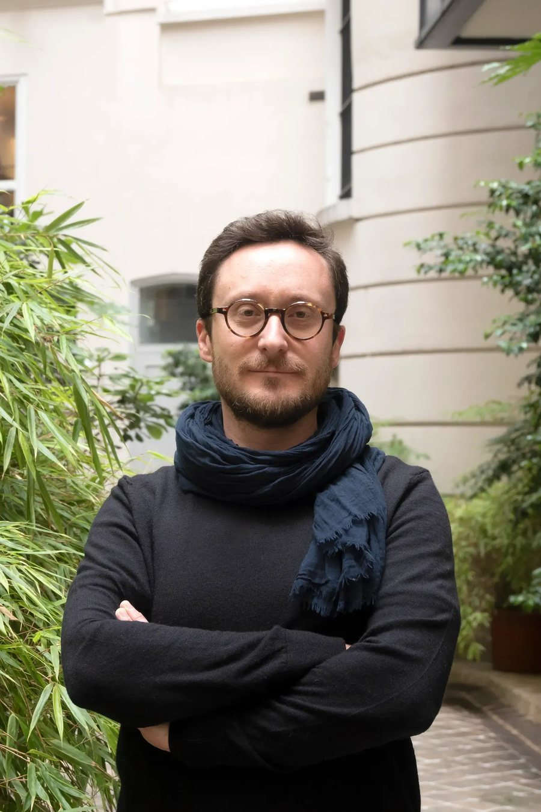
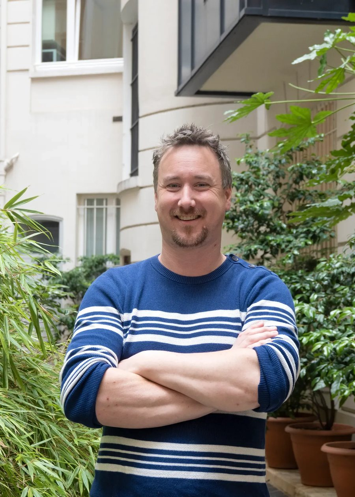
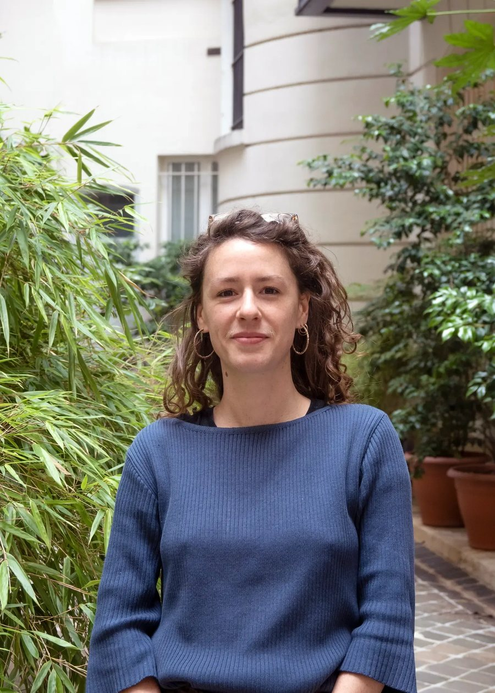
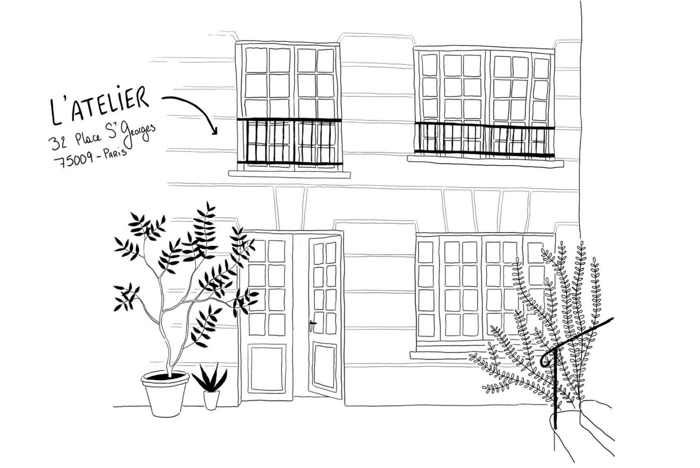
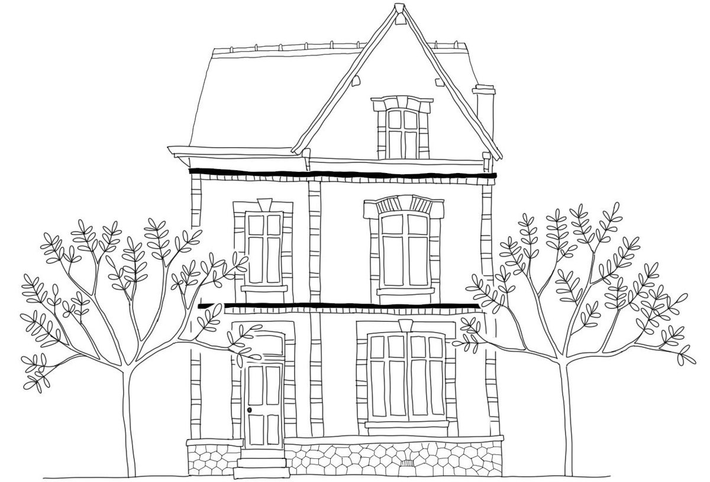

L’Atelier est avant tout la somme de ceux qui le composent.
Les paysagistes concepteurs et géographes de l’Atelier sont issus d’écoles, de formations et d’expériences différentes. Ensemble, ils forment la singularité et l’essence de Troisième Paysage.

Blandine Vareille
Paysagiste conceptrice
Designer urbain
Associée

Coline Durand
Paysagiste conceptrice
Géographe

Damien Roidot
Paysagiste concepteur
Gérant fondateur

François Bosset
Paysagiste concepteur
Associé fondateur

Manon Evans
Paysagiste conceptrice
Géographe
Depuis 2012 : Adrien Defosse, Floriane Gormotte, Mazdak Rohani, Maxime Nauleau, Malena Houry.
Né d’une rencontre, d’une expérience et d’une envie.
Cette pluralité permet d’approcher les sujets par des regards multiples. De nombreux échanges nourrissent chaque projet et amènent une approche unique.
La rencontre
À l’École Supérieure d’Architecture des Jardins, des paysagistes se rencontrent, forts de leurs expériences dans différentes agences.
L’expérience
Grâce au Festival des Jardins, le collectif réalise le jardin « Sens, dessus, dessous ». L’expérience renforce l’envie de travailler ensemble.
Des projets « propres »
Concevoir des projets singuliers et partager au sein d’une même équipe : c’est le moteur de l’Atelier.
L’agence, historiquement basée à Paris, ouvre une antenne à Vendôme.
La plus ancienne salariée de l’agence devient associée.
Durant les premières années, l’Atelier a reçu le soutien de Michel Pena et de Loïc Pianfetti, en participant à des concours, des projets d’études et de maîtrise d’œuvre.
Retrouvez l’agence

Paris
32 place Saint Georges, 75009 Paris
01 44 83 02 04

Vendôme
Antenne ouverte en 2022.
Adresse non publiée sur le site actuel.